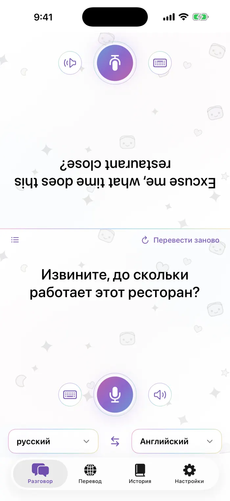
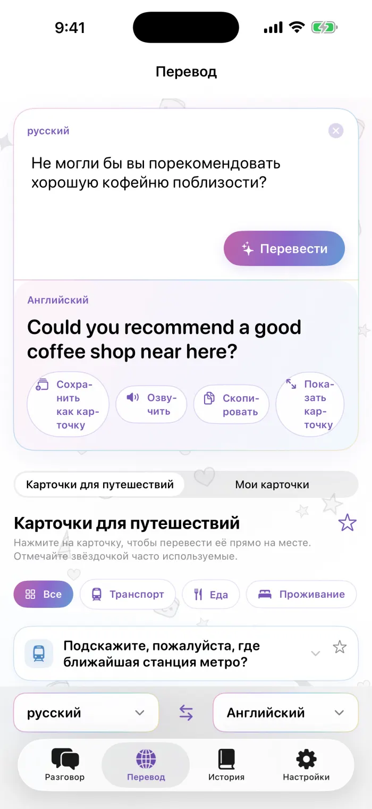
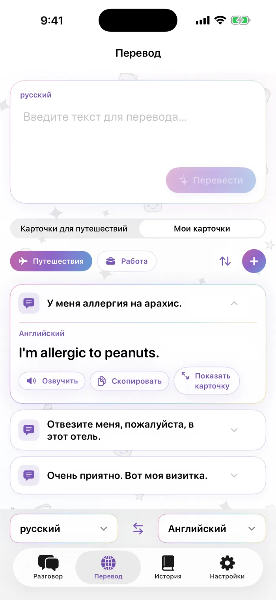
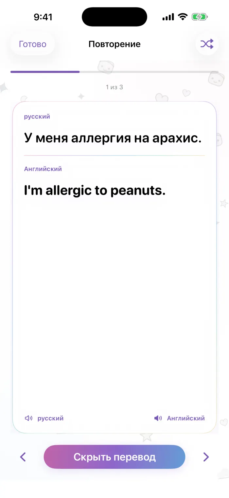

Поддержка
Ответы на частые вопросы о Желе-переводчик. Если вы не нашли нужного, напишите нам — мы читаем каждое сообщение.
sona.orbit.hi@gmail.com
Пожалуйста, укажите модель вашего iPhone, версию iOS и два языка, которыми вы пользовались.
Частые вопросы
Как загрузить язык?
Откройте вкладку «Настройки» в приложении и перейдите в «Офлайн-языки». Языки, которые уже есть на вашем iPhone, показаны первыми. Нажмите «Загрузить» рядом с нужной парой и следуйте подсказкам Apple. Если при переводе появилось сообщение, что языковую пару нужно загрузить, нажмите «Загрузить и повторить».
Работает ли приложение без интернета?
Да. Когда оба языка пары загружены, перевод работает без подключения к интернету. Сеть нужна только для загрузки языков.
Приложение меня не слышит. Что делать?
Для работы Желе-переводчик нужен доступ к микрофону и распознаванию речи. Откройте Настройки > Конфиденциальность и безопасность > Микрофон и Настройки > Конфиденциальность и безопасность > Распознавание речи и включите Желе-переводчик. Некоторые языки поддерживают ввод текста, но не на всех устройствах поддерживают распознавание речи.
Перевод не озвучивается или нет голоса.
Для озвучивания на iPhone должен быть голос нужного языка. Откройте Настройки > Универсальный доступ > Речь > Голоса, выберите язык и загрузите голос. Также проверьте переключатель «Звонок/Бесшумно» и громкость.
Как восстановить покупку на новом iPhone?
Войдите с той же учётной записью Apple, откройте экран Pro в приложении и нажмите «Восстановить покупки».
Как отменить подписку?
Подписками управляет Apple. Откройте Настройки, нажмите на своё имя, затем «Подписки», выберите Желе-переводчик и нажмите «Отменить подписку». Pro будет доступен до конца текущего оплаченного периода.
Сколько своих карточек можно создать бесплатно?
В бесплатной версии можно создать 3 собственные карточки. В Pro ограничений нет: делайте сколько угодно карточек и наборов. Встроенные «Карточки для путешествий» всегда бесплатны.
Какие языки поддерживаются?
Около 20 языков — тех, для которых Apple поддерживает перевод на устройстве. Уже загруженные языки показаны в списке первыми.
Почему показывается реклама и как её убрать?
В бесплатной версии вверху экрана отображается небольшой баннер (в режиме разговора он остаётся на вашей половине и никогда не появляется на стороне собеседника). Любой тариф Pro отключает всю рекламу. То, что вы говорите и переводите, никогда не используется для рекламы.
Где моя история?
Всё, что вы переводите, хранится на вашем iPhone. Просмотр, поиск и повторение карточек из истории доступны в Pro. После перехода на Pro откроется всё, что вы уже переводили.
Использование Желе-переводчик регулируется стандартным лицензионным соглашением Apple с конечным пользователем (EULA). https://www.apple.com/legal/internet-services/itunes/dev/stdeula/
Как работает приложение
Настоящие экраны приложения. Цифры соответствуют пояснениям рядом с каждым экраном.

Разговор
- Сторона собеседника — перевёрнута, чтобы ему было удобно читать через стол
- Нажмите на микрофон, чтобы говорить
- Или введите текст
- Воспроизвести перевод ещё раз
- Выберите оба языка; стрелки посередине меняют направление
- Перевести последнюю фразу ещё раз после смены языка
- Переключиться на список

Перевод
- Введите, что хотите сказать
- Перевести
- Перевод
- Сохранить как карточку, озвучить, скопировать или показать на весь экран
- Переключайтесь между карточками для путешествий и своими карточками

Мои карточки
- Наборы: путешествия, работа или ваши собственные
- Упорядочить: менять порядок, удалять, переименовывать
- Добавить карточку
- Нажмите на карточку, и перевод появится прямо на ней

Повторение
- Оригинал
- Перевод, который появляется по нажатию
- Показать или скрыть перевод
- Предыдущая / следующая карточка (или смахните)
- Перемешать